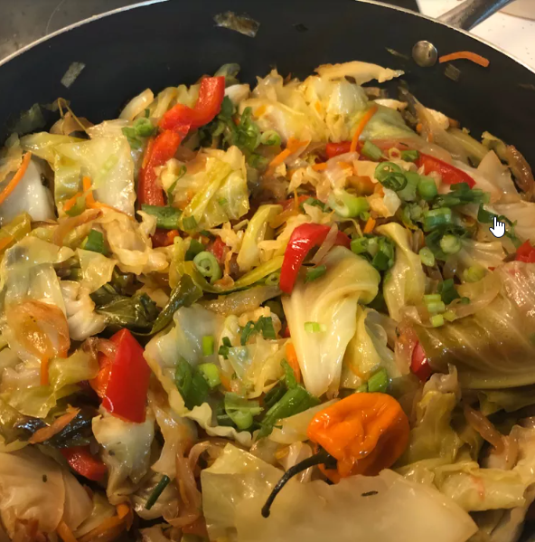

Jamaican Cabbage

Description
This spicy Jamaican-style cabbage dish with chile pepper is delicious with jerk chicken or pork.
Ingredients
- 1 head cabbage
- 2 tablespoons olive oil, or as needed
- 1 small onion, thinly sliced
- ½ chopped green bell pepper
- 1 green onion, sliced
- 1 whole Scotch bonnet chile pepper
- 2 sprigs fresh thyme
- 1 cup shredded carrots
Steps
- Peel tough outer leaves from cabbage. Core the head and shred cabbage; set aside.
- Heat olive oil in a large skillet over medium-high heat
- Stir cabbage and carrots into onion mixture until thoroughly combined
- Stir in vinegar and sugar. Cook, uncovered, stirring occasionally, until cabbage is tender